Heatherwick - Garden Bridge
I was lucky enough to get the chance to attend a work placement at the Heatherwick Studios in London. I was slightly nervous to work in such a super doper professional environment. I was pleasantly surprised upon meeting the staff that they where just people like myself, and that fact made me feel much more relaxed. It so happened that one of the members of their design team was away for the week that I was there. So having an empty desk available they invited me to join the small team working on the prestigious garden bridge project.
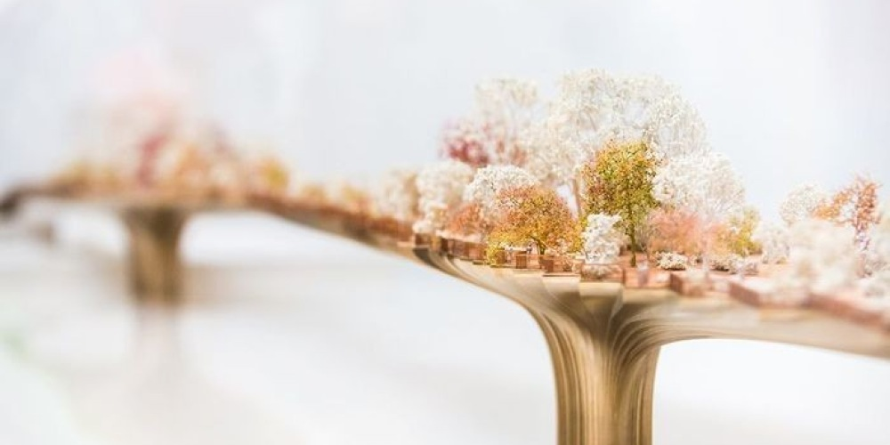This was a hugely exciting proposition, if not a little daunting. I was quite amazed at the team’s willingness to incorporate me and treat me “almost” as an equal member of the team. I was at first worried to ask too many questions, for I feared I might keep them from more important work, but this fear quickly subsided after realising that people would be quite comfortable with stopping what they where doing and giving me little impromptu tutorials.

After me and another new arrival received a brief introduction to the project by the lead architect work began. The overall form and structure of the bridge had largely been decided prior to my arrival. Nevertheless meetings where ongoing with landscape architects and structural engineers to finalise the design. Visually the design of the bridge resembled two bowing trees standing in the river whose branch extents just meet each other in the middle.
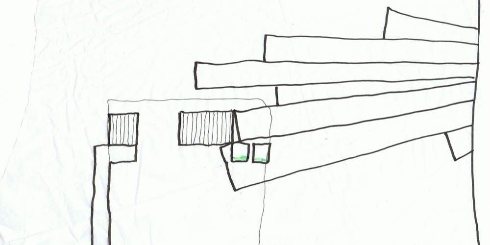The 3d computer model of the bridge had been linked with a graphical algorithm editor, which allowed the shape to be manipulated parametrically. I was very interesting for me to be shown the software with which this had been done.
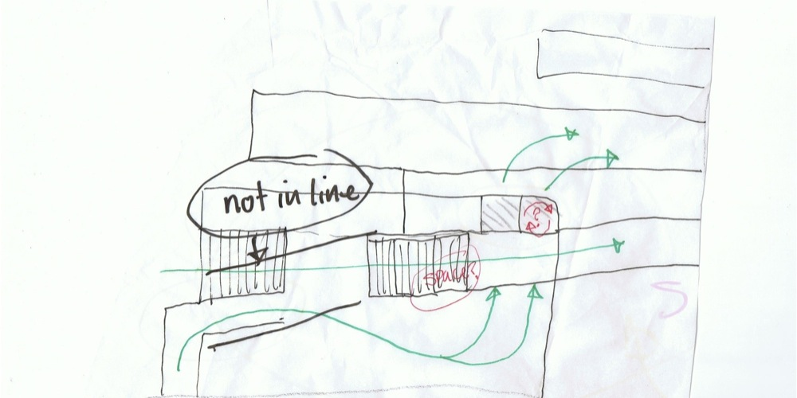The graphical interface of the software was almost exactly like that of one I had previously been using to represent flow diagrams of relationships between geometries. The only difference being that the mathematical calculation facility wasn’t present in my software, which forced me to use a spreadsheet. I was amazed to discover the existence of this new software, and very excited as I knew it would hold the solution to so many design problems I had struggled with in the past.
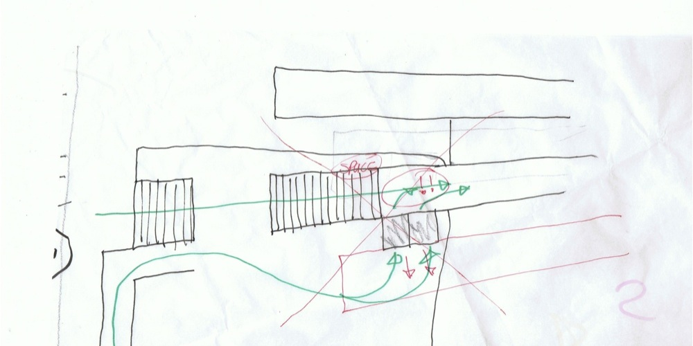Regarding the design of the bridge. It wasn’t yet decided which arrangement of access options would most elegantly convey pedestrians from the ground up to the end of the bridge which happened to be many meters above street level. The north and south landings as they where referred to where constrained in their design by various considerations.
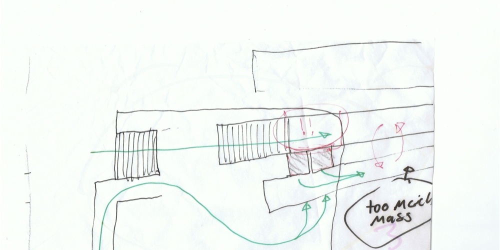The height of the middle of the bridge had to be large enough to allow marine traffic to pass underneath it, and on the north landing a busy London road would also have to squeeze underneath. One solution suggested was to accentuate the curve existing over the length of the bridge surface by bringing the ends down and thus reducing the distance between the ends of the bridge and the ground. Unfortunately this idea was quickly dismissed as it would necessitate more than a one to twenty gradient and therefore be too steep to be in accordance with the current disabled access requirements for a pedestrian bridge walkway.
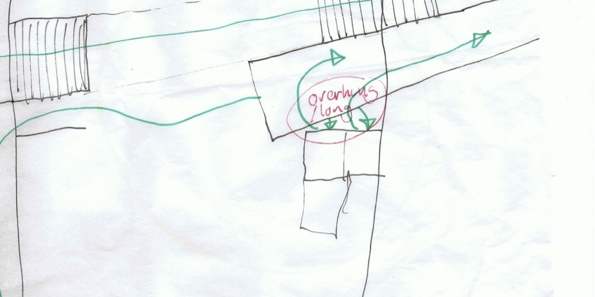The site for the south landing lacks any existing structures. It’s simply a long strip of land perpendicular to the bridge, and parallel to the river. Various access options had been considered at least enough for the model builders to solidify some representation notionally. But eventually a more thorough attention would be directed towards the problem. Attention was currently focused on the north landing. Structurally a great deal already existed on the site and work was already in progress attempting to reconcile access requirements within the rigid geometrical constraints of the site. The end of the bridge terminated a few meters above the roof terrace of temple station.
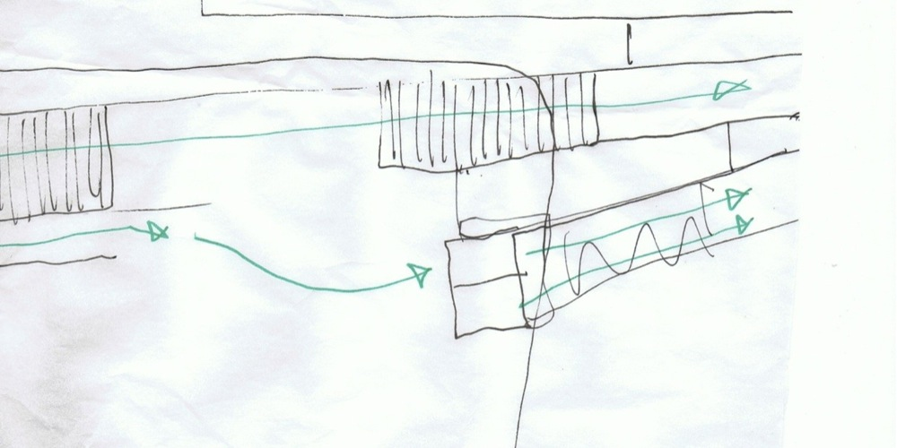Having an existing structure to tie into ticked so many boxes for the engineers that the decision to use the station to house the structural anchor for the end of the bridge was promptly made. Two access options where required. Able-bodied pedestrian access via steps or a ramp. And disabled pedestrian access via a ramp or elevator, the latter being favoured. In an attempt to generate all possible access configurations and thus identify the best solution, each member for the team spent some time roughly sketching up ideas of which they chose three to present to the group in the design meeting. Of those ideas presented one would be chosen for further work.
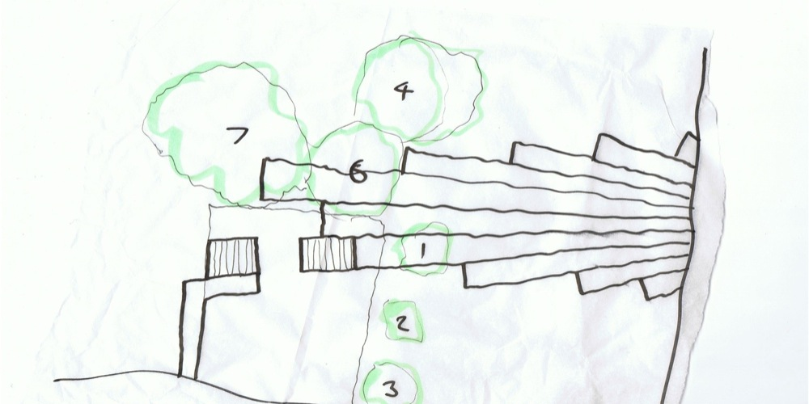After a decision was made it was required that a more detailed drawing of the north end be created, but before that could happen more information was needed. Changes to the design of the north landing would inevitable change the shape of the north end. If the new shape changed the volume and weight of the north end the whole bridge being essential two sets of giant mirrored cantilevers would also have to change in order to maintain a balanced massing. On the site of the north landing there is at least five protected trees, which in attempting to avoid could considerable change the shape of the north end.
 i
i
A professional tree survey hadn’t yet been carried out, but a better understanding of their position was increasingly pressing. I visited the site photographed them and measured their extents. From my measurements I constructed five models in 3d using computer software and located them within the digital context model of the bridge. Later I used a laser cutter to produce one to one hundred scale models of the trees to be incorporated into the large design model, which was being built. A professional tree survey was still be required before any fixed changes where made, but this at least would allow the team to discuss ideas with a cleared understanding of the site.
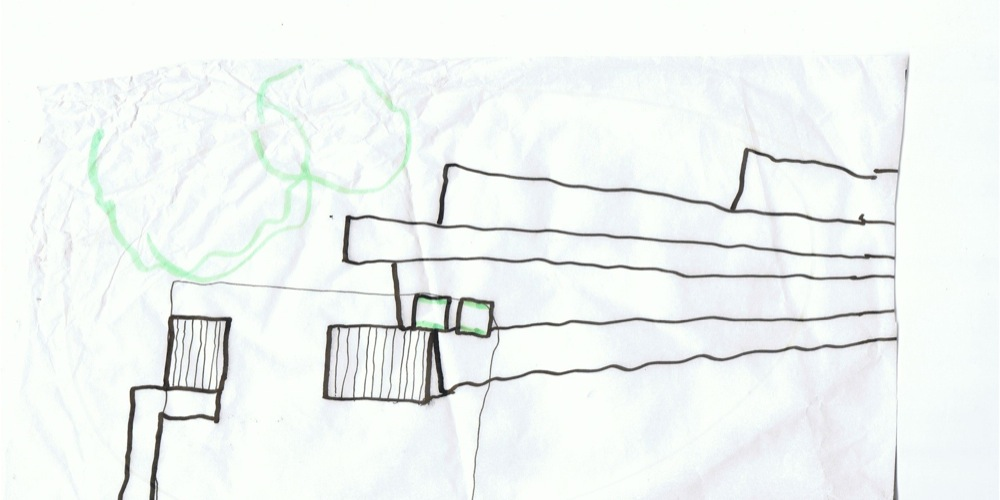I was very excited to be invited to sit in on some of the meetings with the structural engineers and landscape architects during which I gained insight into their approach and learned more of the reasoning leading towards the final design. The engineers explained the proposed steps for the bridges construction. First of which involved driving concrete piles in the river to form the foundation columns, and then building out from there with steel re-enforcing rods embedded in shuttered concrete, all of the time maintaining equally balanced cantilevers. When the cantilevers reach their final extents, a bundle of thick steel reinforcing cables are to be run over the surface of the bridge and tensioned at either end by huge winches before being set in more concrete, thus creating a pre-stressed reinforced concrete beam over the surface to two perfectly balanced tee shaped double cantilevers. In order to allow the accommodation of full size trees in the center of each double cantilever structure the tension cables where going to skirt the perimeter of the trees root ball as opposed to running all the way straight through the center of the bridge.
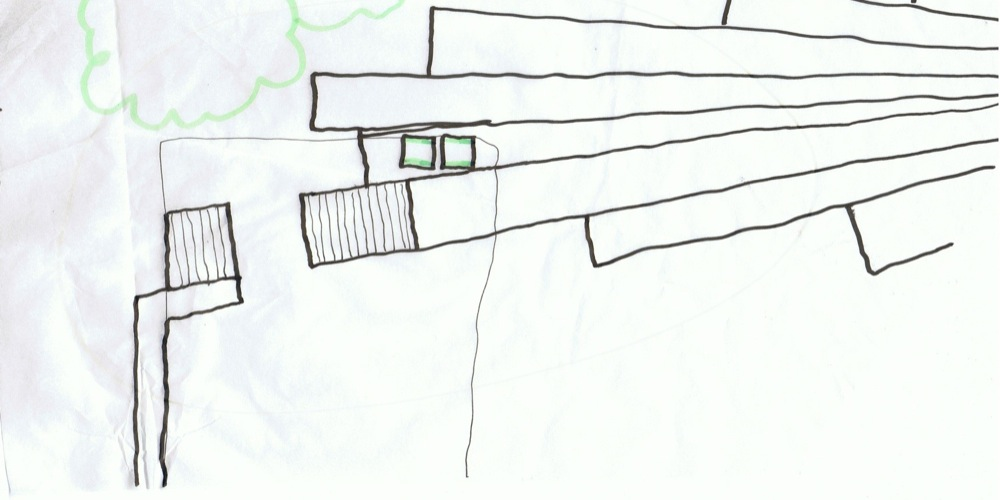It was generally understood that it would make sense to run the pedestrian paths above the run of tensions cables, as this would be a region which wouldn’t allow sufficient soil depth to support planting. An idea presented by the landscape architect was to graduate the planting scheme over the length of the bridge with more formal plants located towards the north end, near Temple Station, and non-formal planting towards the south near the Southbank Centre. Another idea presented by the landscape architect was creating a planting shelf vertically offset from the edge of the bridge as a way of nesting the pedestrian walkway within the planting while still allowing access to the edge of the bridge. He also highlighted the important requirement that the bridges planting wouldn’t obscure any of the famous London view corridors. He showed a drawing with the view corridors marked as lines, avoiding the use of tall planting near these lines combined with the changing soil depths across the bridge constrained the layout of the garden considerably. Various other things where discussed such as nighttime access, regulating traffic during local events, funding, community integration, and maintenance.
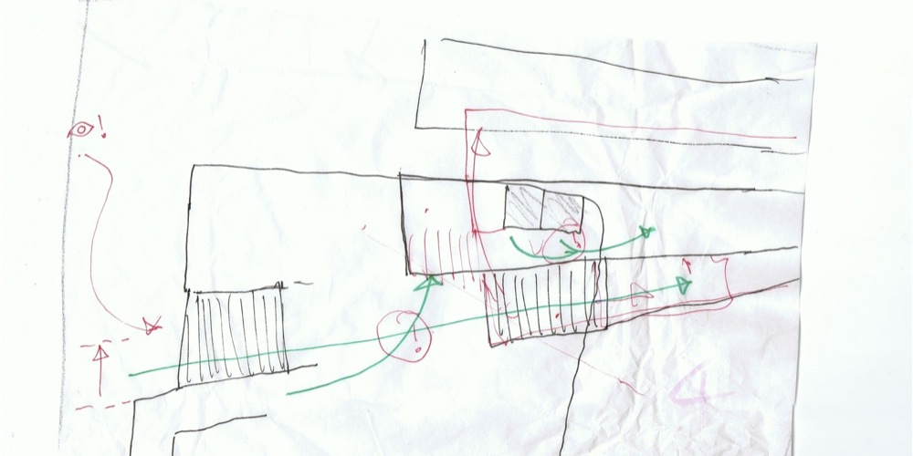I found the environment in the studio extremely conducive for learning. In contrast to working at a problem by ones self and often being held up by minor technical issues, in the studio any problem I encountered was immediately solved by asking one of the numerous highly qualified staff all around me. Everyone was genuinely friendly and happy to help. My only regret is that I didn’t stay longer.
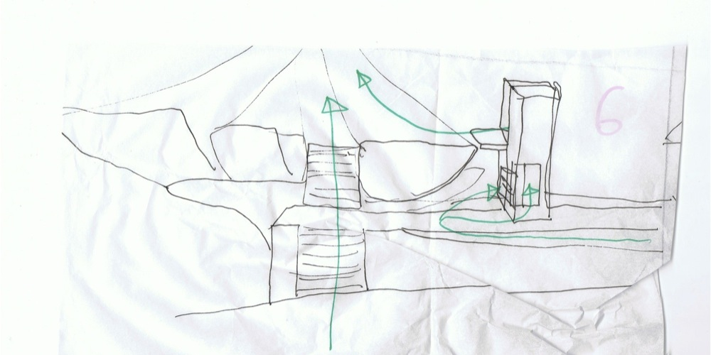